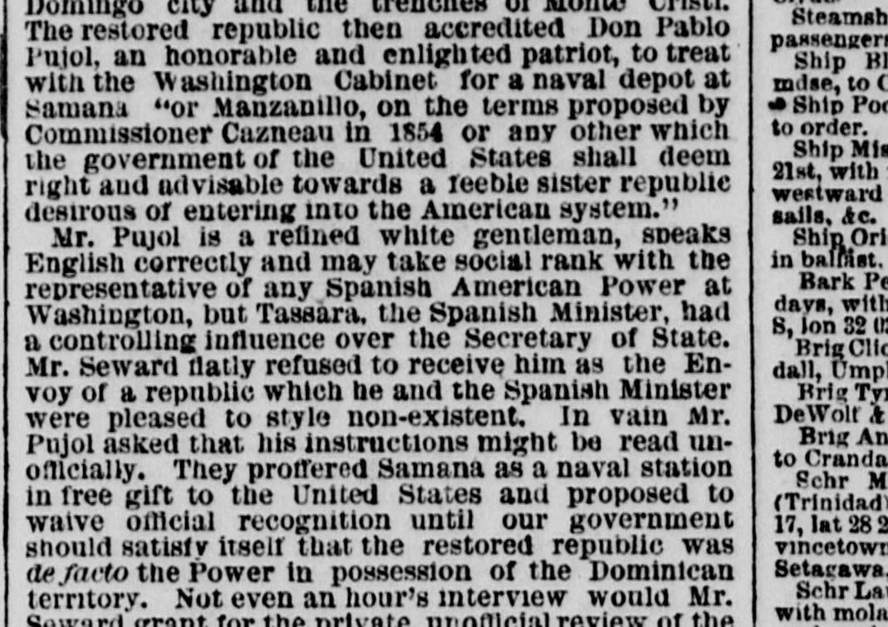
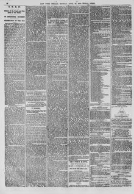

With the Washington Cabinet for a naval depot at suniuiu "orCon el Gabinete de Washington para un depósito naval en Samaná o
The New York Herald. New York [N.Y.], April 26, 1869. Page 10. View the originalVer el original


See the full pageVer la página completaThe New York Herald reported that Dominican envoy Pujol sought to offer Samaná or Manzanillo to the United States as a naval station, even as a free gift without requiring prior formal recognition. However, Secretary of State Seward, reportedly influenced by the Spanish minister, refused to grant Pujol an interview or acknowledge the Dominican Republic. The paper criticized the State Department for repeatedly disregarding strategic American opportunities in Samaná to accommodate Spanish interests.The New York Herald informó que el comisionado dominicano Pujol intentó ceder Samaná o Manzanillo a los Estados Unidos como estación naval, ofreciéndola incluso a título gratuito sin condicionarla al previo reconocimiento diplomático. No obstante, el secretario de Estado Seward, supuestamente influenciado por el ministro de España, se rehusó a conceder una audiencia a Pujol y a reconocer a la República Dominicana. El diario censuró al Departamento de Estado por desaprovechar reiteradamente ventajas estratégicas estadounidenses en Samaná en deferencia a los intereses españoles.
FULL TEXT:TEXTO COMPLETO:
The restored republic then accredited Don Pablo Pujol, an honorable and enlighted patriot, to treat with the Washington Cabinet for a naval depot at Samana 'or Manzanillo, on the terms proposed by Commissioner Cazneau in 1854 or any other which the government of the United States shall deem right and advisable towards a feeble sister republic desirous of entering into the American system.'La república restaurada acreditó entonces a Don Pablo Pujol, un patriota honorable e ilustrado, para tratar con el Gabinete de Washington acerca de un depósito naval en Samaná «o Manzanillo, en los términos propuestos por el comisionado Cazneau en 1854 o cualesquiera otros que el gobierno de los Estados Unidos juzgue correctos y aconsejables hacia una débil república hermana necesitada de su apoyo y protección.»